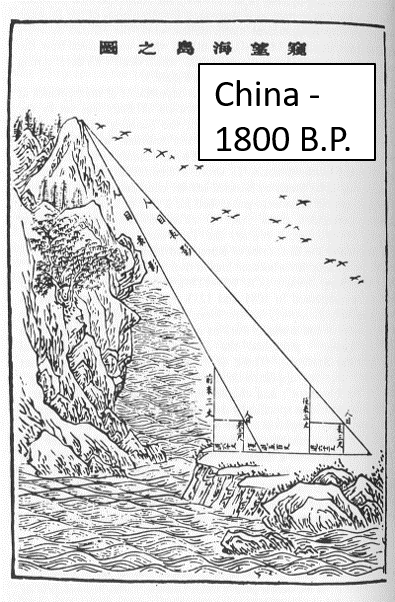
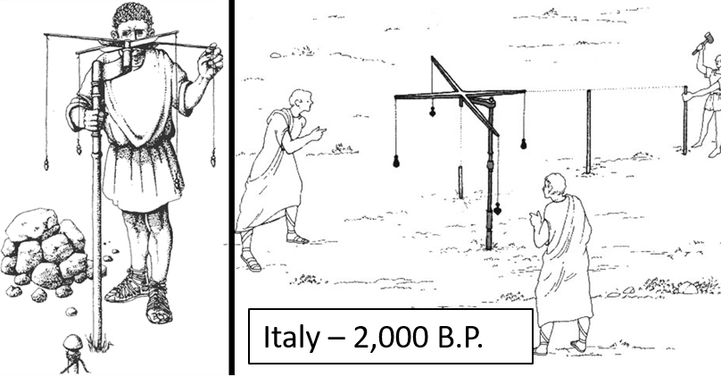
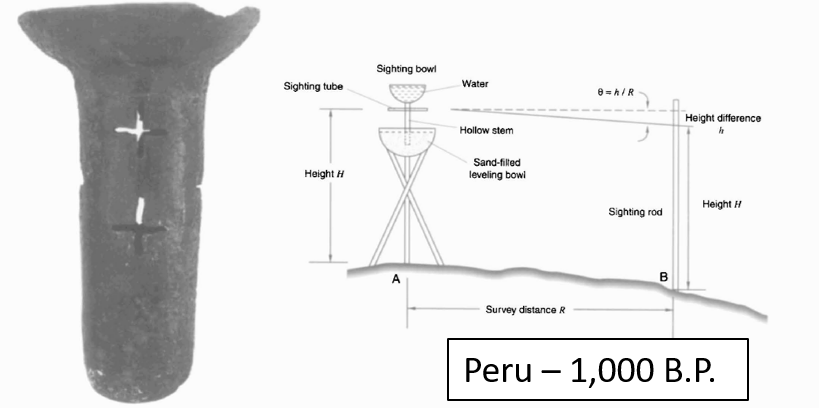

Advent of Surveying
The earliest survey methods were:
* Limited in scale
* Labor intensive
* Only applicable for small areas

Rope stretching developed in Egypt and Mesoamerica.
Advent of Surveying
Measuring and recording angles and distances systematically leads to development of geometry and trigonometry. Maps created using these methods became more accurate. But they were limited to small areas.
Urban Planning
Town plan of Nippur, Babylonia on a clay tablet. Possibly the earliest map drawn to scale 3500 B.P.
Maps could now "accurately" represent: bearings, distances, elevations, & sizes
Line of Sight Methods
Text.



Line of Sight Methods
Allowed for surveying over greater distances and mapping larger areas. Road networks could be constructed, distances between settlements could be "approximated".